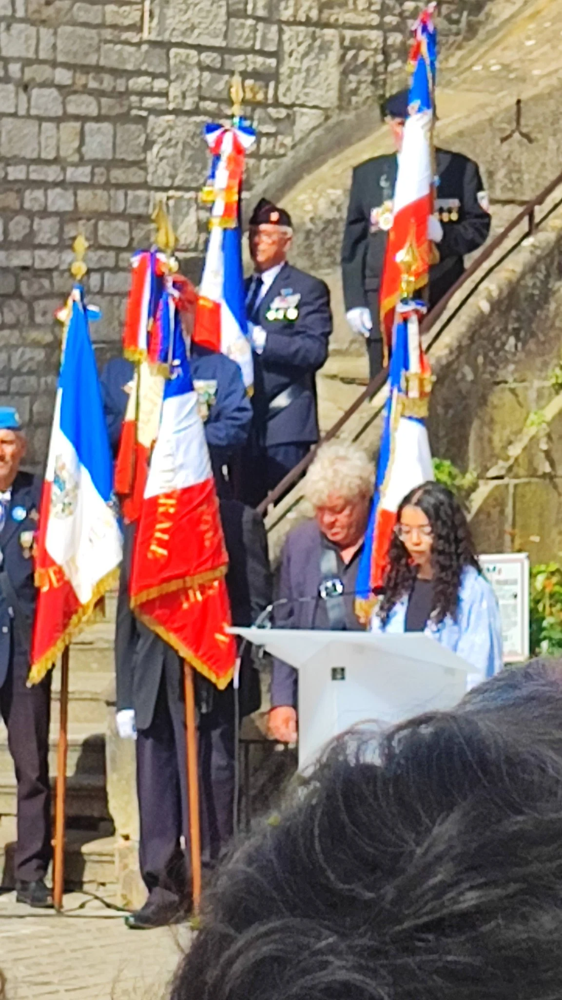
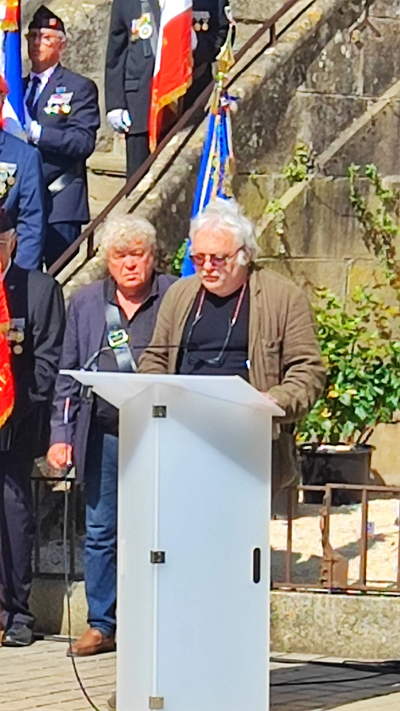
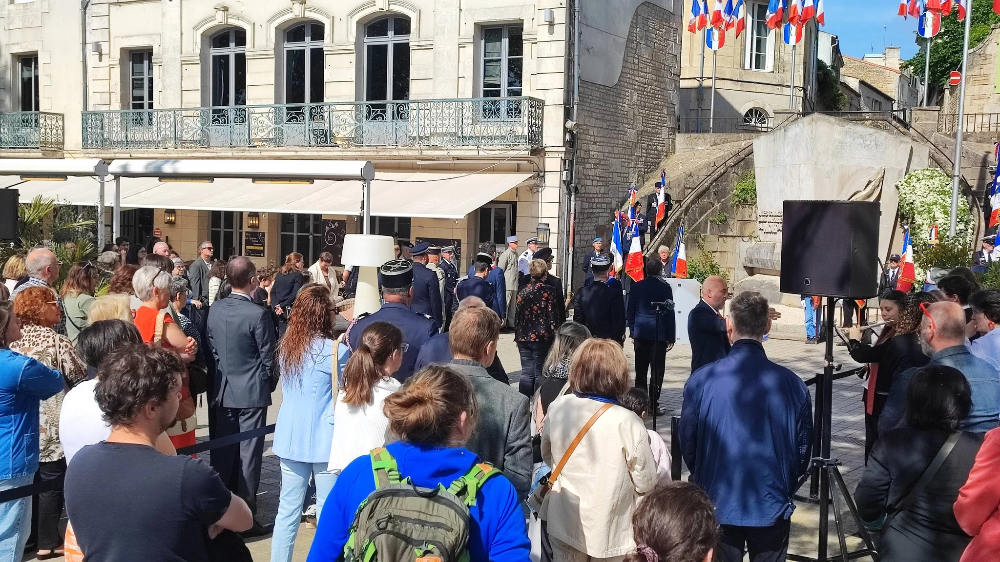
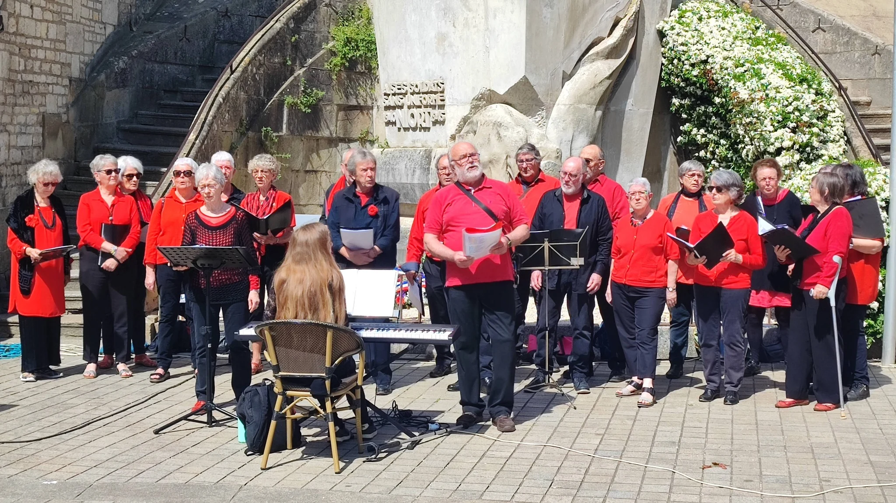

Compte rendu fédéral
À Niort, nous avons honoré la mémoire des victimes de la déportation
Date indiquée par Facebook · 27 avril 2026
Repères éditoriaux
Dimanche 26 avril à Niort, nous étions présents pour honorer les victimes de la déportation. Des collégiens et des élus du conseil municipal des jeunes ont lu des témoignages et déposé des roses blanches. Après la cérémonie officielle, nous avons accueilli la chorale « Y’en a marre ». Cette mémoire nous engage à poursuivre le combat contre le fascisme.
Texte conservé avec la publication
Journée nationale du souvenir des victimes et des héros de la déportation
Nous étions présents dimanche 26 avril à Niort pour la Journée nationale du souvenir des victimes et des héros de la déportation qui ont connu l’enfer des camps de concentration et d’extermination nazis.
Des collégiens et élus du conseil municipal des jeunes ont lu des poèmes et témoignages de survivants. Pour chaque camp dont la liste a été énumérée, les adolescents ont déposé une rose blanche.
Au nom de la Fédération Nationale des Déportés et Internés, Résistants et Patriotes (FNDIRP), Frédéric Mousson a fait lesture du message rédigé conjointement par la FNDIRP , la Fondation pour la Mémoire de la Déportation (FMD) et l’Union Nationale des Associations de Déportés et Internés de la Résistance et Familles (UNADIF – FNDIR).
@https://fndirp.org/2026/03/30/message-des-associations-pour-la-journee-nationale-du-souvenir-des-heros-de-la-deportation/
A l’issue de la cérémonie officielle, la Fédération du PCF en Deux-Sèvres avait invité la chorale « Y’en a marre » qui a interprété quelques chants (Nuit et Brouillard entre autres) . Le secrétaire départemental du PCF a rappelé que commémorer le souvenir des victimes ne suffit pas. Alors que les derniers témoins de cette France qui avait pris le parti de ne pas abdiquer arrivent en fin de vie, alors que la poussée électorale du RN et de l’extrême droite se poursuit en parvenant par des artifices de communication à se faire passer pour « fréquentable », le PCF rappelle qu’une autre France existait, celle où s’étaient engagé.es quelques uns et quelques unes pour lutter contre la montée du national-socialisme, contre le fascisme, contre la guerre elle-même.
Ceux qui ont été raflés et déportés par les nazis étaient juifs, tsiganes, communistes, résistants, homosexuels… toutes et tous différents.
Ne l’oublions pas et poursuivons leur combat.
Celui qui ne connaît pas l'histoire est condamné à la revivre.




Sources
Archive rouge · export Facebook · AR-0002-FB-00800
À lire aussi · À Niort, notre appel pour la Journée nationale du souvenir de la déportation